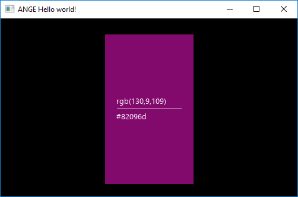

4. Tutorial 01- Creating first widget.
Simple widget implementation
The first widget that we will create will be trivial but it will be useful in the next tutorial. This will be a widget that displays color information in a non-standard way.
The idea is, that by creating the object of our widget and passing a color to it, displays the appropriate information.
The final effect will look like this:

During the implementation, we will use the "CustomWidget" class available in the ANGE library. This class includes the implementation of the basic functions of each widget in the engine, so it saves us a lot of time and code lines.
So, we will start with a skeleton class like this:
class ColorInfo : public CustomWidget
{
}
We also need three functions: constructor, destructor and function that sets the color of the widget. In the constructor we will create a view of our widget, in the destructor we will clean up after our allocation and in the SetColor function we will update the view state.
class ColorInfo : public CustomWidget
{
ColorInfo(Window* window, Widget2DProps props, Font* font) : CustomWidget(window, props)
{
}
~ColorInfo()
{
}
void SetColor(Color color)
{
}
}
Let's move to the constructor implementation. We wiil add all created objects to the m_Components list, on which all implemented base functions of the CustomWidget class depends. Individual issues are described in the code.
ColorInfo(Window* window, Widget2DProps props, Font* font) : CustomWidget(window, props)
{
//Create Background
m_Components.insert(std::make_pair(
CI_BG, //Here we set the identifier after which we will refer to our object.
new Background(window, props, { Color(0,0,0,255),Color{0,0,0,0}, {0,0} }) //Base color is Black, no border.
));
//Create Line
//We are setting the position and dimensions of our line.
props.Position = { props.Position.tX + 20, props.Position.tY + (int)props.Dimensions.tHeight / 2 };
props.Dimensions = { props.Dimensions.tWidth - 40, 1 };
m_Components.insert(std::make_pair(
CI_LINE,
new Background(window, props, { Color(255,255,255,255),Color{0,0,0,0}, {0,0} }) //Base color is White, no border.
));
//Add Text
props.Position += {0, 4};
props.Dimensions = { props.Dimensions.tWidth, (size_t)font->GetLineHeight(10) };
m_Components.insert(std::make_pair(
CI_TEXT,
new Text(window, props, { font, 10, L"rgb(0,0,0)", Color{255,255,255,255}})
));
props.Position += {0, -8-font->GetLineHeight(10)};
m_Components.insert(std::make_pair(
CI_TEXT_HEX,
new Text(window, props, { font, 10, L"#000000", Color{255,255,255,255} })
));
}
In addition, we must add such definitions to the file:
#define CI_BG 1001
#define CI_LINE 1002
#define CI_TEXT 1003
#define CI_TEXT_HEX 1004
Now it's time for the destructor:
~ColorInfo()
{
//Delete previously created widgets.
for (auto it : m_Components) {
delete it.second;
}
}
And.... our function that changes the widget color:
void SetColor(Color color)
{
//Change background color
auto bg = (Background*)GetComponent(CI_BG); //Get object by ID.
bg->SetColor(color);
//Change line & text color
auto line = (Background*)GetComponent(CI_LINE);
auto text = (Text*)GetComponent(CI_TEXT);
auto textHex = (Text*)GetComponent(CI_TEXT_HEX);
//Check color brightness (Dark text looks poor on a dark background.)
if (color.GetBrightness() < 128)
{
line->SetColor(Color{255,255,255,255});
text->SetColor(Color{ 255,255,255,255 });
textHex->SetColor(Color{ 255,255,255,255 });
} else {
line->SetColor(Color{ 0,0,0,255 });
text->SetColor(Color{ 0,0,0,255 });
textHex->SetColor(Color{ 0,0,0,255 });
}
//Change text
wchar_t buffer[17];
swprintf(buffer, L"rgb(%i,%i,%i)", (int)(color.r*255), (int)(color.g*255), (int)(color.b*255));
text->SetText(std::wstring(buffer));
//Change text
swprintf(buffer, L"#%02x%02x%02x", (int)(color.r * 255), (int)(color.g * 255), (int)(color.b * 255));
textHex->SetText(std::wstring(buffer));
}
That's all. Now we can enjoy a complete widget with all basic functions.
ColorInfo ci(window, props, font);
ci.SetColor(Color(130,9,109,255));
ci.SetPosition({100,100});
ci.SetResizeProportions(50, 50, 25, 25);
...etc